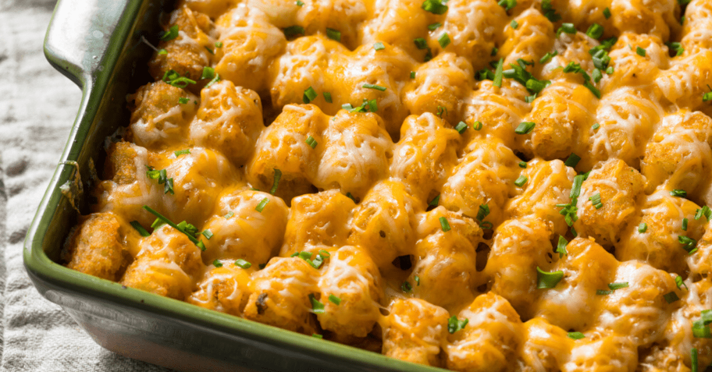

Beef & Tater Tot Bake

An quick and easy casserole that is just as good as going out eat!
Sometimes you need to choose a dinner that makes is easy work for YOU and can feed the family!
Make dinner time easy with this recipe that is fun and filling!
Ingredients needed:
- 4 cups frozen Tater Tots
- 1 pound ground beef
- 1/4 teaspoon garlic powder
- 1/8 teaspoon pepper
- 1 can (10-3/4 ounces) condensed cream of broccoli soup, undiluted
- 1/3 cup 2% milk
- 1 package (16 ounces) frozen chopped broccoli, thawed
- 1 can (2.8 ounces) french-fried onions, divided
- 1 cup shredded Colby-Monterey Jack cheese, divided
- 1 medium tomato, chopped
Directions:
- Preheat oven to 400°. Spread Tater Tots evenly in an ungreased 13x9-in. baking dish. Bake, uncovered, 10 minutes.
- Meanwhile, in a large skillet, cook over medium heat until no longer pink, 5-7 minutes; crumble meat; drain. Stir in seasonings, soup, milk, broccoli, 3/4 cup onions, 1/2 cup cheese and tomato; heat through. Pour over potatoes.
- Bake, covered, 20 minutes. Sprinkle with the remaining onions and cheese. Bake, uncovered, until cheese is melted, 5-10 minutes.
Go back to Home